Hi, I'm Phoemela T. Dela Cruz
Welcome to my electronic portfolio for 2CALC-IT (Calculus for Information Technology). As a Cybersecurity student, this portfolio showcases my assigned course outputs, handwritten problem-solving drills, quizzes, prelim examinations, group projects, and structured reflections.
Student Profile
- Name: Phoemela T. Dela Cruz
- Program / Section: BS Cybersecurity (CYB-202)
- Institution: Holy Angel University
- Role: GDG on Campus HAU Officer
Course Artifacts Showcase
Featuring all assigned 2CALC-IT activities, handwritten problem sets, quizzes, exams, and projects.
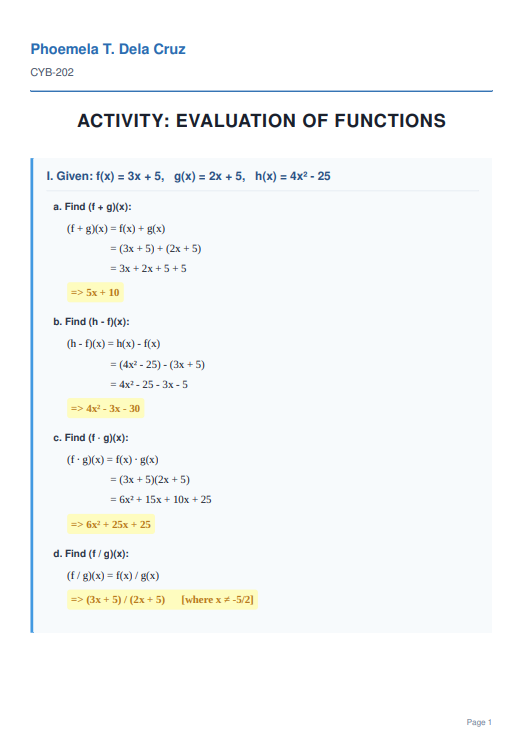
Activity: Evaluation of Functions
Comprehensive multi-page activity covering function operations, algebraic combinations, and composite functions.
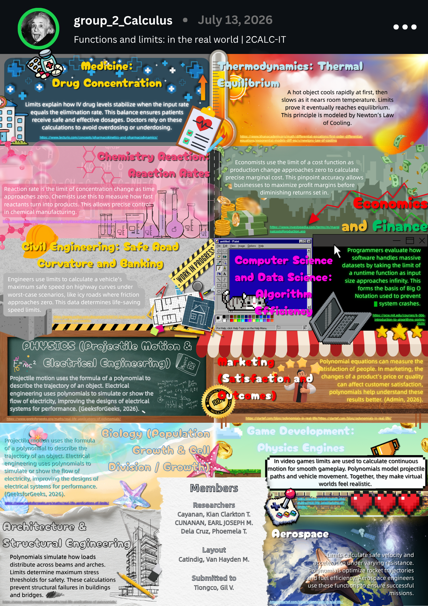
Infographic: Functions and Limits in the Real World
Group infographic illustrating calculus applications across medicine, economics, computer science, and engineering.
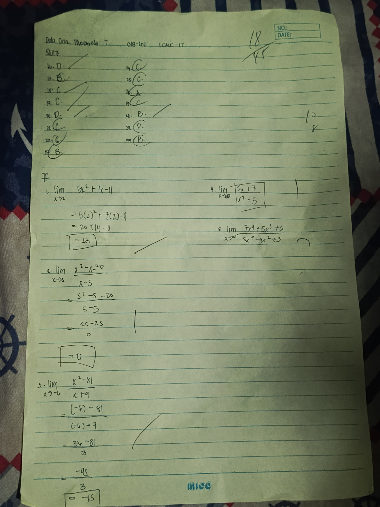
Quiz (Limits & Evaluation)
Handwritten quiz assessment evaluating limits of algebraic functions and asymptotic behavior.
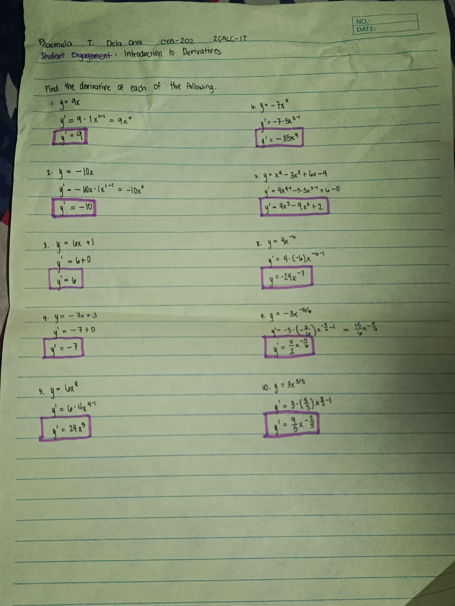
Student Engagement: Introduction to Derivatives
Handwritten problem set finding derivatives of power functions, polynomials, and basic terms.
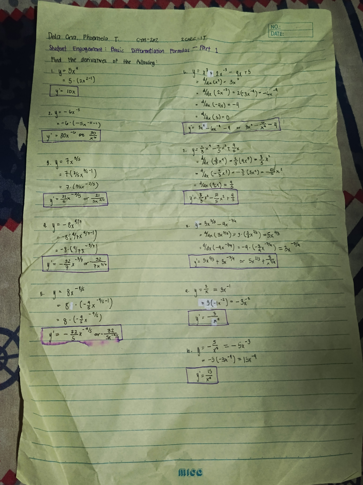
Student Engagement: Basic Differentiation Formulas Part 1
Mastering fractional exponents, negative powers, and sum/difference derivative rules.
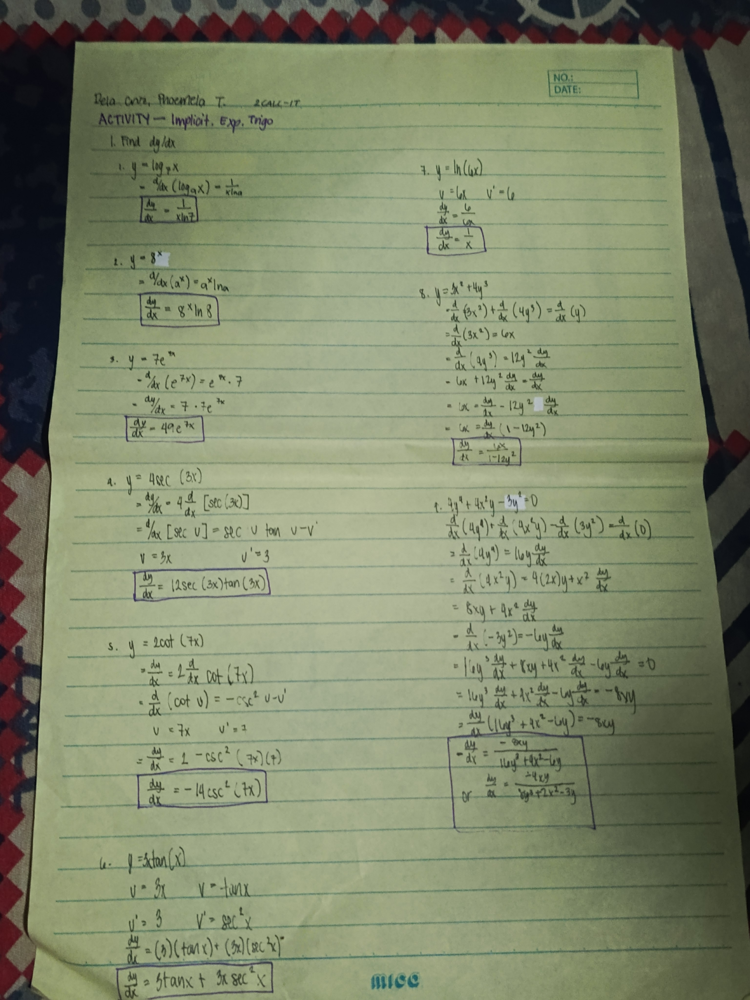
ACTIVITY - Implicit, Exp, Trigo
Detailed solutions for logarithmic, exponential, trigonometric derivatives, and implicit differentiation.
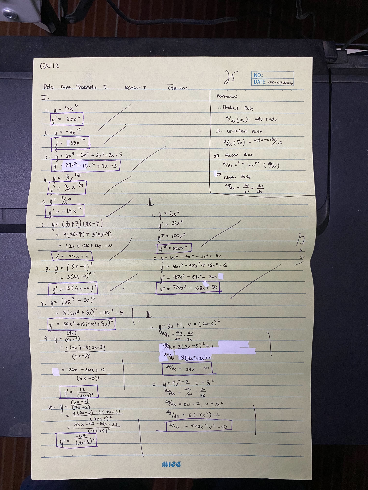
QUIZ (Differentiation & Rules)
Timed quiz covering product rule, quotient rule, power rule, and chain rule applications (Dated: 08-03-2026).
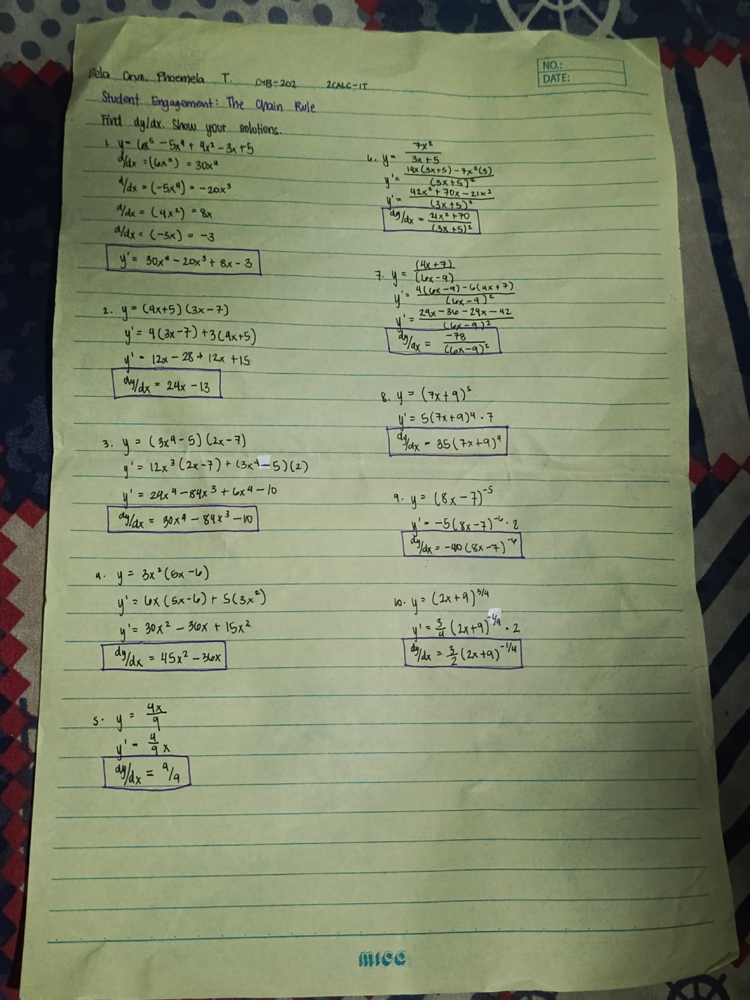
Student Engagement: The Chain Rule
Step-by-step solutions for differentiating composite functions and nested algebraic expressions.
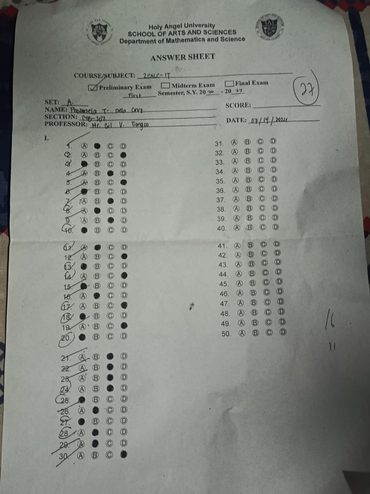
Preliminary Examination Answer Sheet
Holy Angel University Department of Mathematics and Science official answer sheet (Dated: 07/14/2026).
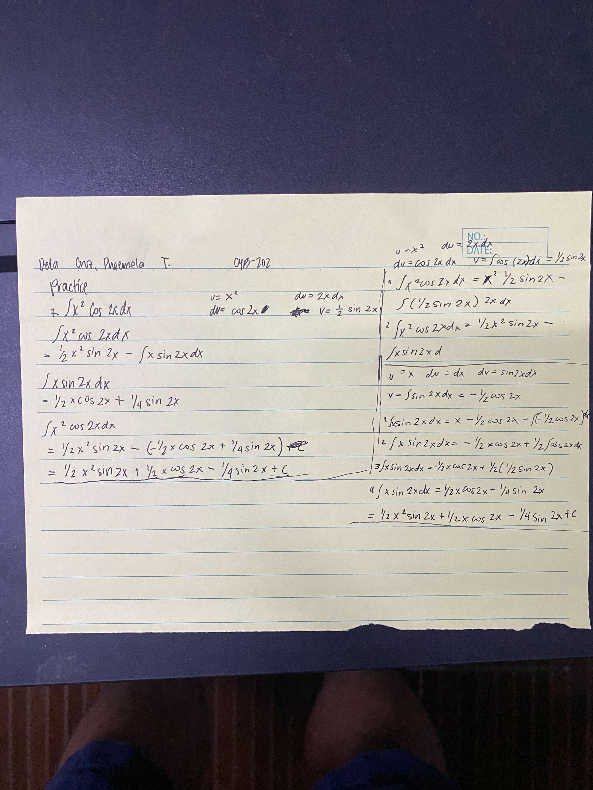
Practice: Integration Work
Detailed handwritten derivations for integral problems involving trigonometric and exponential functions.
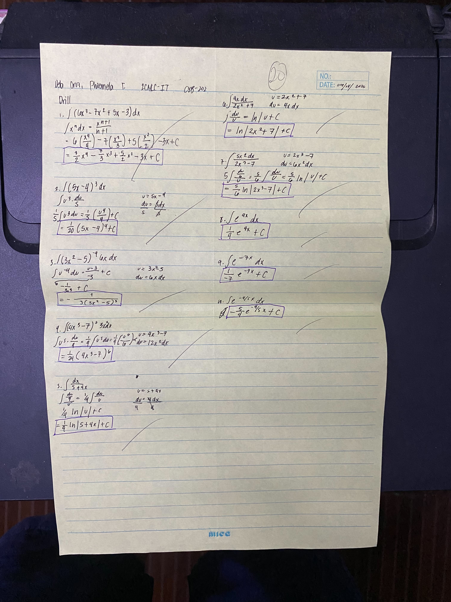
Drill: Integration Techniques
Comprehensive drill sheet on polynomial and exponential integration formulas (Dated: 09/14/2026).
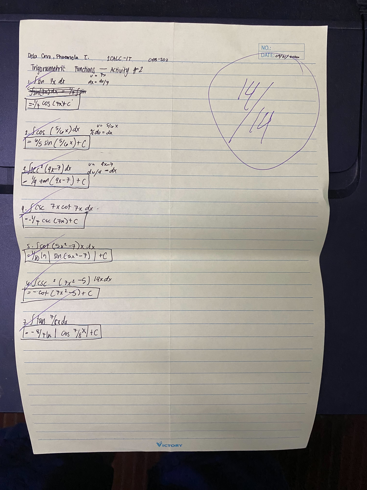
Trigonometric Functions — Activity #2
Perfect score activity (14/14) covering trigonometric integrals and substitution (Dated: 09/21/2026).
Learning Journey & Reflections
Thoughtful insights on how calculus transforms technical problem-solving in Cybersecurity and IT.
The Bridge Between Calculus and Cybersecurity
Core Course SynthesisThroughout 2CALC-IT, I discovered that mathematical concepts like limits, derivatives, and integrals are far from abstract theory—they are foundational to IT and Cybersecurity. Limits model asymptotic throughputs and network bottleneck capacities; derivatives measure instantaneous rates of traffic change and anomaly detection bursts; integrals quantify cumulative bandwidth consumption and storage accumulation.
Perseverance and Analytical Growth
Overcoming ChallengesWorking through practice sets, drills, quizzes, exams, and group projects taught me the value of step-by-step problem-solving and perseverance. Every challenge—from low quiz scores to complex chain rule calculations—served as a stepping stone toward analytical confidence.
Resume, Honors & Certifications
Professional background, leadership roles, and academic achievements.
Professional Summary
Phoemela T. Dela Cruz
BS Cybersecurity Student • Holy Angel University • Section CYB-202
Student leader and Community Relations Officer for Google Developer Groups on Campus HAU. Passionate about software development, secure web design, and creative craftsmanship.
Technical Skills:
Honors & Certifications
Community Relations Officer
Google Developer Groups on Campus HAU
NSTP Community Immersion Leader
Project "Thomas and Friends" Leadership & Accomplishment
Dean's List Honoree
Holy Angel University - School of Computing